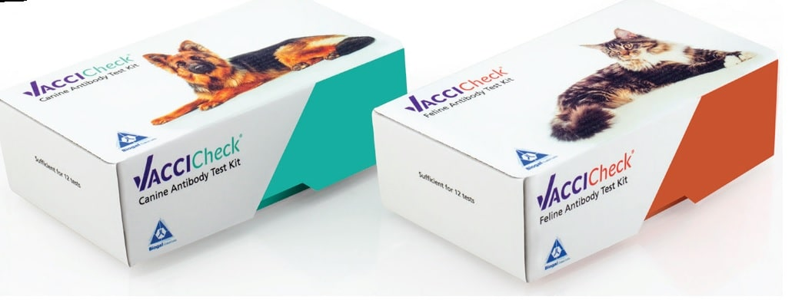

Is your pet over vaccinated?
Find out what is the recommended vaccination treatment for your pet
As pet owners, we’re often advised to revaccinate our pets on an annual basis. However, for what’s known as “core vaccines” the World Small Animal Veterinary Association (WSAVA) guideline recommends to revaccinate “Not more often than every 3 years”.
Read more belowTo avoid over vaccination -
Ask your vet about VacciCheck
Testimonials
A blood sample taken yearly from an animal for a titer check is preferential to an unnecessary core vaccination as a vaccine may cause harm. There are many practitioners and owners who need assurance that an animal does have immunity. An antibody test such as the VacciCheck can give them that assurance.
- Professor Ronald D. Schultz
Testimonials 2
A blood sample taken yearly from an animal for a titer check is preferential to an unnecessary core vaccination as a vaccine may cause harm. There are many practitioners and owners who need assurance that an animal does have immunity. An antibody test such as the VacciCheck can give them that assurance.
- Professor Ronald D. Schultz
Testimonials 3
A blood sample taken yearly from an animal for a titer check is preferential to an unnecessary core vaccination as a vaccine may cause harm. There are many practitioners and owners who need assurance that an animal does have immunity. An antibody test such as the VacciCheck can give them that assurance.
- Professor Ronald D. Schultz
Testimonials 3
A blood sample taken yearly from an animal for a titer check is preferential to an unnecessary core vaccination as a vaccine may cause harm. There are many practitioners and owners who need assurance that an animal does have immunity. An antibody test such as the VacciCheck can give them that assurance.
- Professor Ronald D. Schultz
Testimonials 3
A blood sample taken yearly from an animal for a titer check is preferential to an unnecessary core vaccination as a vaccine may cause harm. There are many practitioners and owners who need assurance that an animal does have immunity. An antibody test such as the VacciCheck can give them that assurance.
- Professor Ronald D. Schultz
What is over vaccination and why may it be bad for your pet?
Core vaccines protect our pets from serious infectious diseases, but when over vaccinated your pet may develop side effects, such as: fever, allergic reactions and immune mediated diseases.
What is Titer Testing?
A Titer test for core vaccines shows if your pet is already immunized from the previous vaccination it received by detecting its antibodies. If antibody is present in your pet’s blood, there’s no need to revaccinate.
When should my pet be Titer tested?
Puppies/kittens - “A dedicated owner may wish to confirm that a puppy is protected after the course of primary vaccinations when these are completed at 16 weeks or older” (WSAVA).
Adult Pets – “A titer test can be used to confirm protection at 3-yearly intervals” (WSAVA).
Are there special groups of dogs or cats that should be tested more often with VacciCheck?
The WSAVA guidelines also suggest that as a precautionary measure, for geriatric dogs (aged over 10 years), such titer testing should be performed annually.
How can we reduce over vaccination?
Although all veterinarians agree vaccines are necessary for dogs and cats, the frequency in which core vaccines are given may be disproportionate. The key to identifying the pet’s actual need for vaccination is in a simple test – Titer Test.
How is a Titer test performed?
Vets have a quick and simple test that can be performed in their clinic, named VacciCheck. The Canine and Feline VacciCheck are core vaccine tests that determine if a dog or cat requires an additional core vaccination.
Core vaccines protect our pets from serious infectious diseases, but when over vaccinated your pet may develop side effects, such as: fever, allergic reactions and immune mediated diseases.
A Titer test for core vaccines shows if your pet is already immunized from the previous vaccination it received by detecting its antibodies. If antibody is present in your pet’s blood, there’s no need to revaccinate.
Puppies/kittens - “A dedicated owner may wish to confirm that a puppy is protected after the course of primary vaccinations when these are completed at 16 weeks or older” (WSAVA).
Adult Pets – “A titer test can be used to confirm protection at 3-yearly intervals” (WSAVA).
The WSAVA guidelines also suggest that as a precautionary measure, for geriatric dogs (aged over 10 years), such titer testing should be performed annually.
Although all veterinarians agree vaccines are necessary for dogs and cats, the frequency in which core vaccines are given may be disproportionate. The key to identifying the pet’s actual need for vaccination is in a simple test – Titer Test.
Vets have a quick and simple test that can be performed in their clinic, named VacciCheck. The Canine and Feline VacciCheck are core vaccine tests that determine if a dog or cat requires an additional core vaccination.
To avoid over vaccination - Ask your vet about VacciCheck
Which “Core diseases” should
my pet be vaccinated for?
